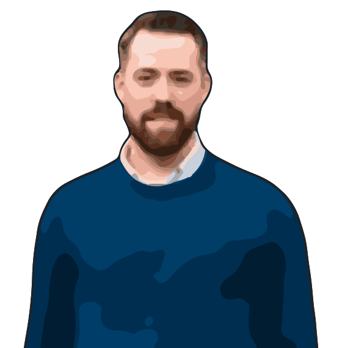

Ghislain Gabriëlse
Test automation consultant at DeTesters
About twelve years in testing, mostly building the tools that make complex tasks simple. I also teach teams to write stable tests with Playwright. Based in Woerden, father of two, butler to a cat.
Playwright training